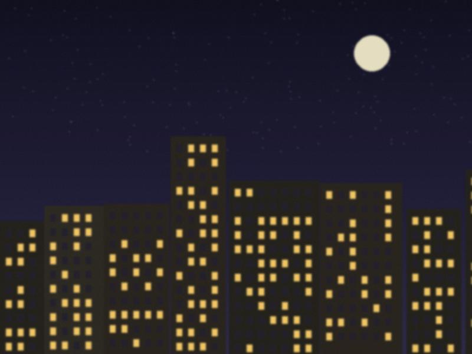

Waiting for the scanner
17 May 2015 · patients

The new MRI building's windows at night. The lamps have not been switched off since it opened.The hospital got an MRI scanner this spring (the only one in the Zone), and now the waiting list is five weeks. Five weeks is not "soon". For a headache, fine. For a lump, not fine. Families call me, friends call me: "can you put in a word?" And I say I have no word to put, I am the second doctor on the night shift.
Those who can, go to Almaty by the night bus, six or eight hours on the road, and come back with a CD in an envelope. A girl at my aunt's work told me she took her father there with a blanket and a thermos. We have a scanner and we have a queue. The queue is not a problem of the machine.
1 Comment
my aunt too. almaty, the night bus, the thermos. it's like a pilgrimage.
Comments are closed.